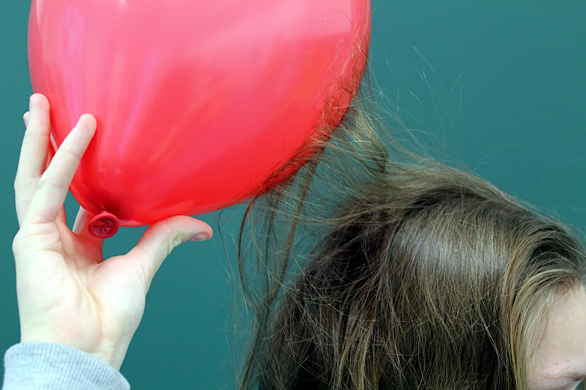
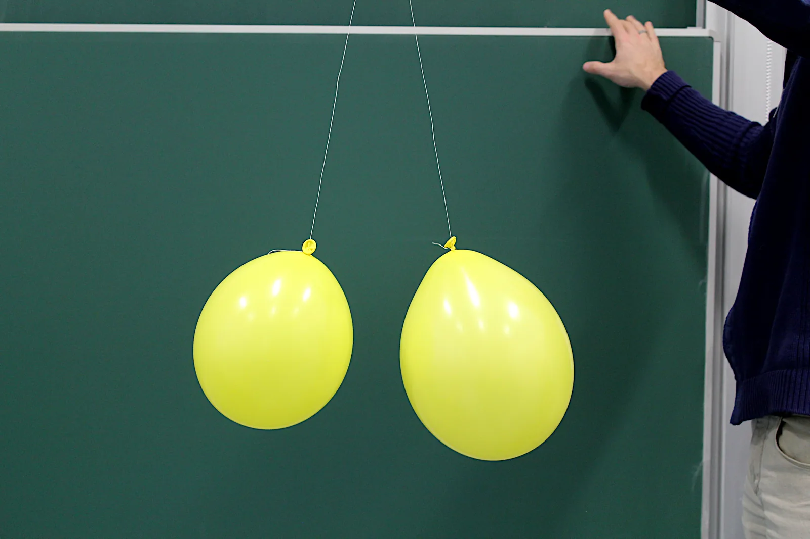

Sähkövaraus ja Coulombin laki
Miksi villapaitaan hierottu ilmapallo jää kiinni seinään, vaikka seinässä ei ole sähkövarausta?
Pohjatiedot
- Sähkövirta on varauksen liikettä, $I = Q : t$, ja elektronin varaus on $-e$luku Virtapiiri, sähkövirta ja jännite
- Voima ja vastavoima ovat yhtä suuret ja vastakkaissuuntaisetluku Vuorovaikutus ja voima: Newtonin ensimmäinen ja kolmas laki
Ydinpolku: etene vaiheiden mukaan. Valinnainen-merkityt tehtävät tarjoavat lisäharjoittelua. Valinnaisia tehtäviä 3.
Pohdinta
Hiero ilmapalloa hetken villapaitaan ja aseta se seinää vasten. Pallo jää seinään kiinni ilman teippiä ja pysyy siinä pitkään. Samalla tavalla hiuksiin hierottu muovikampa nostaa pöydältä pieniä paperisilpun paloja. Seinä ja paperi eivät ole varautuneet, eikä niitä ole hierottu mihinkään.
Miksi varattu ilmapallo tarttuu seinään, jossa ei ole sähkövarausta?
Valinnainen Kertaa: sähkövirta ja varaus
Ennusta
Tee ennusteet ennen tutkimista 3 kysymystä
Ennuste 1: etäisyys ja voima
Ennuste 2: suurempi varaus
Ennuste 3: miksi pallo tarttuu seinään?
Tutki
Säädä pallojen varauksia ja etäisyyttä ja katso, miten voimanuolet ja lukemat muuttuvat. Merkitse pisteitä kuvaajaan: miten voima riippuu etäisyydestä?
Simulaatio
Käyttöohje
Liukusäätimet asettavat pallojen varaukset $q_1$ ja $q_2$ välillä $-40$–$+40\,\text{nC}$ ja pallojen keskipisteiden etäisyyden $r$ välillä $3{,}0$–$12\,\text{cm}$. Punainen nuoli $\overline{F}_{21}$ on voima, jolla pallo 2 vaikuttaa palloon 1, ja $\overline{F}_{12}$ voima, jolla pallo 1 vaikuttaa palloon 2. Nuolet on piirretty pallojen yläpuolelle, ja niiden pituus on verrannollinen voiman suuruuteen; hyvin pitkä nuoli on katkaistu. Merkitse piste lisää nykyisen voiman ja etäisyyden kuvaajaan, joka näyttää samoilla varauksilla merkityt pisteet. Vaaka-akseli vaihtaa kuvaajan vaaka-akseliksi etäisyyden $r$ tai etäisyyden neliön käänteisluvun $\tfrac{1}{r^2}$. Kenttäviivat näyttää pallojen yhteisen sähkökentän kenttäviivat.
Mallin oletukset
Pallot ovat pieniä verrattuna niiden etäisyyteen, joten mallissa ne ovat pistevarauksia ilmassa, ja niiden varaukset pysyvät paikallaan. Todellisissa palloissa varaus siirtyy lähellä toisiaan hieman pallojen pinnalla influenssin vuoksi, joten aivan lähekkäin voima poikkeaa mallin arvosta. Mallissa ei myöskään ole influenssia: kun toisen pallon varaus on nolla, voimaa ei ole, vaikka todellinen varaukseton metallipallo vetäytyisi varattua palloa kohti. Luvut ovat mallin laskemia arvoja, eivät mittauksia.
Laskennan selitys
Voiman suuruus lasketaan Coulombin lailla
$$F = k\,\frac{\lvert q_1 q_2 \rvert}{r^2}$$
missä $k = 8{,}988 \cdot 10^{9}\,\tfrac{\text{N} \cdot \text{m}^2}{\text{C}^2}$, varaukset muunnetaan coulombeiksi ($1\,\text{nC} = 10^{-9}\,\text{C}$) ja etäisyys metreiksi, ja tulos näytetään millinewtoneina. Molempiin palloihin vaikuttaa sama $F$ vastakkaisiin suuntiin: samanmerkkisillä varauksilla poispäin toisesta pallosta ja erimerkkisillä toista palloa kohti. Kenttäviivat piirretään kahden pistevarauksen yhteisen kentän suuntaan pienin askelin.
Koe 1: voima ja etäisyys
Testaa ennuste 1. Pallojen varaukset $+20\,\text{nC}$ pysyvät vakioina; muuta vain etäisyyttä $r$. Kirjaa voima ainakin etäisyyksillä $3{,}0\,\text{cm}$, $6{,}0\,\text{cm}$ ja $12\,\text{cm}$ ja merkitse pisteet kuvaajaan. Vaihda lopuksi vaaka-akseliksi etäisyyden neliön käänteisluku. Miten voima muuttuu, kun etäisyys kaksinkertaistuu?
Alkutila: varaus $q_1$ = $20\,\text{nC}$, varaus $q_2$ = $20\,\text{nC}$, etäisyys $r$ = $6\,\text{cm}$. Vakiona: varaus $q_1$, varaus $q_2$. Muutetaan: etäisyys $r$.
| etäisyys $r$ | $F$ $(\text{mN})$ |
|---|
Kuinka monta kertaa suurempi voima on etäisyydellä $3{,}0\,\text{cm}$ kuin etäisyydellä $12\,\text{cm}$? Laske taulukkosi lukemista.
Vihje 1: ohjaava kysymys
Etsi taulukosta voimat etäisyyksillä $3{,}0\,\text{cm}$ ja $12\,\text{cm}$.
Vihje 2: mikä yhteys
Jaa lyhyemmän etäisyyden voima pidemmän etäisyyden voimalla.
Vihje 3: välivaihe
Mallin arvoilla $3{,}99\,\text{mN} : 0{,}250\,\text{mN}$. Etäisyys on nelinkertainen, joten mitä tulos kertoo voiman riippuvuudesta?
Näytä ratkaisu
Annettu
mallin lukemat, kun $q_1 = q_2 = +20\,\text{nC}$: etäisyydellä $r_1 = 3{,}0\,\text{cm}$ voima $F_1 = 3{,}99\,\text{mN}$ ja etäisyydellä $r_2 = 12\,\text{cm}$ voima $F_2 = 0{,}250\,\text{mN}$
Kysytty
voimien suhde $F_1 : F_2$
Periaate
Varaukset pysyvät samoina, joten vain etäisyys muuttaa voimaa. Suhde kertoo, kuinka monta kertaa suurempi voima on lyhyemmällä etäisyydellä, ja sitä voi verrata etäisyyksien suhteeseen.
Kaava
suhde on $\dfrac{F_1}{F_2}$
Muunnokset
Ei tarvita: kumpikin voima on millinewtoneina, ja yksikkö supistuu.
Sijoitus
Vastaus
$16$
; mallin lukemat ovat kolmen merkitsevän numeron tarkkuudella.
Järkevyys
Etäisyys on nelinkertainen, ja $4^2 = 16$. Voima on siis kääntäen verrannollinen etäisyyden neliöön, kuten Coulombin laki sanoo. Jos voima olisi kääntäen verrannollinen pelkkään etäisyyteen, suhde olisi vain $4$.
Koe 2: varaus ja voima ja vastavoima
Testaa ennuste 2. Pallon 1 varaus $+20\,\text{nC}$ ja etäisyys $6{,}0\,\text{cm}$ pysyvät vakioina; muuta vain pallon 2 varausta $q_2$. Kirjaa molempiin palloihin vaikuttavat voimat ainakin varauksilla $+10\,\text{nC}$, $+20\,\text{nC}$ ja $+40\,\text{nC}$ ja kokeile lopuksi negatiivista varausta. Kumpaan palloon vaikuttaa suurempi voima?
Alkutila: varaus $q_1$ = $20\,\text{nC}$, varaus $q_2$ = $20\,\text{nC}$, etäisyys $r$ = $6\,\text{cm}$. Vakiona: varaus $q_1$, etäisyys $r$. Muutetaan: varaus $q_2$.
| varaus $q_2$ | $F_{21}$ $(\text{mN})$ | $F_{12}$ $(\text{mN})$ |
|---|
Johtopäätös: Coulombin voima
Kirjoita taulukoidesi perusteella: miten voima riippuu pallojen etäisyydestä ja pallon 2 varauksesta? Kumpaan palloon vaikuttaa suurempi voima, ja mitä varauksen merkin vaihtaminen muutti?
Mallivastaus
Kun etäisyys kaksinkertaistui $3{,}0\,\text{cm}$:stä $6{,}0\,\text{cm}$:iin, voima pieneni $3{,}99\,\text{mN}$:sta $0{,}999\,\text{mN}$:iin eli neljäsosaan, ja nelinkertaisella etäisyydellä $12\,\text{cm}$ se oli kuudestoistaosa, $0{,}250\,\text{mN}$. Voima on siis kääntäen verrannollinen etäisyyden neliöön: kun vaaka-akselina on $\tfrac{1}{r^2}$, pisteet ovat origon kautta kulkevalla suoralla. Kun pallon 2 varaus kaksinkertaistui $+20\,\text{nC}$:sta $+40\,\text{nC}$:iin, voima kaksinkertaistui $0{,}999\,\text{mN}$:sta $2{,}00\,\text{mN}$:iin, joten voima on suoraan verrannollinen varaukseen. Molempiin palloihin vaikutti aina yhtä suuri voima, myös silloin, kun varaukset olivat eri suuret. Kun $q_2$ muutettiin negatiiviseksi, voiman suuruus pysyi samana, mutta pallot alkoivat vetää toisiaan puoleensa. Arvot ovat mallin laskemia.
Arvioi oma vastauksesi
Rastita kohdat, jotka omassa vastauksessasi jo on.
Kertaa asia teoriatiivistelmästä ja harjoittele tehtävillä.
Teoriatiivistelmä
Ydinajatus
Sähkövaraus ja alkeisvaraus
Aineen atomeissa on positiivisesti varattuja protoneja ja negatiivisesti varattuja elektroneja (luku Virtapiiri, sähkövirta ja jännite). Sähkövaraus on hiukkasten ominaisuus, jonka vuoksi ne vaikuttavat toisiinsa sähköisellä vuorovaikutuksella: samanmerkkiset varaukset hylkivät toisiaan ja erimerkkiset vetävät toisiaan puoleensa. Varauksen tunnus on $Q$ tai $q$, ja sen yksikkö on coulombi $\text{C}$. Protonin varaus on $+e$ ja elektronin $-e$, missä $e$ on alkeisvaraus, pienin vapaana esiintyvä varaus. Neutronilla ei ole varausta.
Tavallisessa kappaleessa protoneja ja elektroneja on yhtä paljon, joten sen kokonaisvaraus on nolla: kappale on sähköisesti neutraali. Kappale on varautunut, kun siinä on elektroneja enemmän tai vähemmän kuin protoneja. Varaus koostuu aina kokonaisista alkeisvarauksista:
$$Q = n e$$
missä $Q$ on kappaleen varauksen suuruus ($\text{C}$), $n$ ylimääräisten tai puuttuvien elektronien lukumäärä ja $e = 1{,}602 \cdot 10^{-19}\,\text{C}$ alkeisvaraus. Coulombi on suuri varaus, sillä siihen tarvitaan $6{,}24 \cdot 10^{18}$ alkeisvarausta. Hankaamalla varatun ilmapallon varaus on tyypillisesti kymmeniä nanocoulombeja: varaus $-50\,\text{nC}$ tarkoittaa noin $3{,}1 \cdot 10^{11}$ ylimääräistä elektronia.
Varauksen säilyminen
Varausta ei synny eikä häviä. Eristetyn systeemin kokonaisvaraus eli sen kaikkien varausten summa pysyy samana, vaikka varausta siirtyy kappaleesta toiseen. Tämä on varauksen säilymislaki. Kun ilmapalloa hierotaan villaan, osa villan elektroneista siirtyy ilmapallon pintaan. Ilmapallo saa negatiivisen varauksen, ja villalle jää yhtä suuri positiivinen varaus, koska siltä puuttuu yhtä monta elektronia. Kiinteissä aineissa siirtyvät elektronit; protonit pysyvät atomien ytimissä.

Kappaleiden varautuminen
Kappale voidaan varata kolmella tavalla.
- Hankaus. Kaksi eri ainetta hangataan toisiaan vasten, ja elektroneja siirtyy aineesta, joka pitää niistä heikommin kiinni, toiseen aineeseen. Kappaleet varautuvat yhtä suuresti ja vastakkaismerkkisesti.
- Kosketus. Varattu kappale koskettaa johdetta, ja osa varauksesta siirtyy johteeseen. Kaksi samanlaista metallipalloa jakaa kosketuksessa yhteisen varauksensa tasan: jos varaukset ovat ensin $+12\,\text{nC}$ ja $0\,\text{nC}$, kummankin varaus on kosketuksen jälkeen $+6\,\text{nC}$.
- Influenssi. Varattu kappale tuodaan johteen lähelle koskematta siihen. Johteen vapaat elektronit siirtyvät, joten johteen lähipuolelle syntyy vastakkaismerkkinen ja kaukaiselle puolelle samanmerkkinen varaus. Johteen kokonaisvaraus ei muutu. Jos johde kuitenkin yhdistetään hetkeksi maahan johtimella, osa elektroneista siirtyy maahan tai maasta johteeseen, ja johde jää varatuksi.
Miksi varattu kappale vetää neutraalia kappaletta
Influenssi selittää, miksi varattu kappale vetää puoleensa myös neutraalia kappaletta. Metallipallon vastakkaismerkkinen varaus on lähempänä varattua sauvaa kuin samanmerkkinen varaus. Sähköinen voima heikkenee etäisyyden kasvaessa, joten vetovoima on suurempi kuin hylkimisvoima, ja pallo vetäytyy sauvaa kohti.
Eristeessä elektronit eivät pääse liikkumaan kappaleesta toiseen, mutta jokaisen molekyylin varaukset siirtyvät hieman: molekyyli polarisoituu. Negatiivisesti varatun ilmapallon vieressä seinän molekyylien positiiviset päät kääntyvät palloa kohti. Seinä pysyy neutraalina, mutta lähellä olevat positiiviset päät vetävät palloa enemmän kuin kauempana olevat negatiiviset päät hylkivät sitä. Siksi ilmapallo pysyy seinässä ja kampa nostaa paperisilppua.
Sähkövirta on varauksen siirtymistä
Kun varausta siirtyy paikasta toiseen, kulkee sähkövirta. Johtimessa virta on poikkileikkauksen läpi aikayksikössä kulkeva varaus, $I = Q : t$ (luku Virtapiiri, sähkövirta ja jännite). Sama pätee kipinään ja salamaan. Kun kosketat kuivana talvipäivänä ovenkahvaa, kehostasi purkautuu kipinässä varaus, joka on tyypillisesti alle mikrocoulombin. Purkaus kestää vain noin mikrosekunnin, joten virta on hetken ampeerin luokkaa, vaikka siirtynyt varaus on pieni.
Varauksen ympärillä on sähkökenttä
Varattu kappale vaikuttaa toiseen varattuun kappaleeseen koskematta siihen. Tämä kuvataan sähkökentällä: varaus muuttaa ympäröivää tilaa niin, että toiseen varaukseen kohdistuu siinä sähköinen voima. Kenttää havainnollistetaan kenttäviivoilla. Kenttäviivan suunta on suunta, johon pieneen positiiviseen testivaraukseen kohdistuva voima osoittaa; negatiiviseen varaukseen voima osoittaa kenttäviivaa vastaan.
Pistevaraus on varattu kappale, jonka koko on pieni verrattuna tarkasteltaviin etäisyyksiin. Positiivisesta pistevarauksesta kenttäviivat lähtevät säteittäin ulospäin, ja negatiiviseen pistevaraukseen ne tulevat säteittäin sisäänpäin. Lähellä varausta viivat ovat tiheässä ja kenttä on voimakas; kauempana viivat harvenevat ja kenttä heikkenee. Kentän voimakkuutta käsitellään laskemalla luvussa Homogeeninen sähkökenttä.

Coulombin laki
Kahden pistevarauksen välisen sähköisen voiman suuruus on suoraan verrannollinen varausten tuloon ja kääntäen verrannollinen niiden välisen etäisyyden neliöön. Tämä on Coulombin laki:
$$F = k\,\frac{\lvert q_1 q_2 \rvert}{r^2}$$
missä $F$ on voiman suuruus ($\text{N}$), $q_1$ ja $q_2$ varaukset ($\text{C}$), $r$ varausten välinen etäisyys ($\text{m}$) ja $k = 8{,}988 \cdot 10^{9}\,\tfrac{\text{N} \cdot \text{m}^2}{\text{C}^2}$ Coulombin lain vakio. Laki pätee pistevarauksille ja tasaisesti varatuille palloille, joiden etäisyys mitataan keskipisteiden välillä. Vakion arvo pätee tyhjiössä; ilmassa voima on lähes sama.
Voima ja vastavoima
Coulombin laki antaa voiman suuruuden. Voiman suunta päätellään varausten merkeistä: voimat ovat varausten välisellä suoralla, ja samanmerkkiset varaukset hylkivät, erimerkkiset vetävät toisiaan puoleensa. Varaus $q_1$ vaikuttaa varaukseen $q_2$ voimalla $\overline{F}_{12}$ ja varaus $q_2$ varaukseen $q_1$ voimalla $\overline{F}_{21}$. Ne ovat voima ja vastavoima, $\overline{F}_{12} = -\overline{F}_{21}$ (luku Vuorovaikutus ja voima: Newtonin ensimmäinen ja kolmas laki), joten ne ovat yhtä suuret ja vastakkaissuuntaiset myös silloin, kun varaukset ovat eri suuret. Lain kaavassa varaukset ovat symmetrisesti, joten sama $F$ vaikuttaa kumpaankin varaukseen.
Etäisyyden neliö
Voima riippuu etäisyydestä voimakkaasti. Kun etäisyys kaksinkertaistuu, nimittäjä $r^2$ nelinkertaistuu ja voima pienenee neljäsosaan. Kolminkertaisella etäisyydellä voima on yhdeksäsosa ja nelinkertaisella kuudestoistaosa. Varauksiin voima on sen sijaan suoraan verrannollinen: kun toinen varaus kaksinkertaistuu, voima kaksinkertaistuu. Kuvaajassa kumpikin varaus on $20\,\text{nC}$. Etäisyydellä $3\,\text{cm}$ voima on $4{,}0\,\text{mN}$ ja etäisyydellä $6\,\text{cm}$ enää $1{,}0\,\text{mN}$.
Usean varauksen voimat
Kun varaukseen vaikuttaa useampi muu varaus, jokaisen varauksen voima lasketaan Coulombin lailla erikseen, kuin muita ei olisi. Varaukseen vaikuttava kokonaisvoima on näiden voimien vektorisumma:
$$\overline{F} = \overline{F}_1 + \overline{F}_2$$
missä $\overline{F}$ on kokonaisvoima ($\text{N}$) ja $\overline{F}_1$ ja $\overline{F}_2$ kahden muun varauksen siihen kohdistamat voimat ($\text{N}$). Kun kaikki varaukset ovat samalla suoralla, samansuuntaiset voimat lasketaan yhteen ja vastakkaissuuntaiset vähennetään toisistaan.
Yleinen virhekäsitys
Moni ajattelee, että suurempi varaus vaikuttaa pienempään suuremmalla voimalla kuin pienempi suurempaan. Varausten väliset voimat ovat kuitenkin voima ja vastavoima: ne ovat aina yhtä suuret ja vastakkaissuuntaiset. Coulombin laissa on varausten tulo, joten kummankin varauksen kaksinkertaistaminen kaksinkertaistaa saman voiman, joka vaikuttaa molempiin.
Toinen virhe on ajatella, että neutraaliin kappaleeseen ei vaikuta sähköinen voima. Varattu kappale vetää neutraalia kappaletta puoleensa, koska influenssi tai polarisoituminen tuo vastakkaismerkkisen varauksen lähemmäs kuin samanmerkkisen. Kolmas virhe on luulla, että hankaus synnyttää varausta. Hankaus vain siirtää elektroneja kappaleesta toiseen, ja kokonaisvaraus säilyy.
Tiivistelmä
- Varaus on alkeisvarauksen monikerta, $Q = ne$, $e = 1{,}602 \cdot 10^{-19}\,\text{C}$. Samanmerkkiset varaukset hylkivät ja erimerkkiset vetävät toisiaan puoleensa.
- Varaus säilyy: hankauksessa ja kosketuksessa elektroneja vain siirtyy kappaleesta toiseen. Kaksi samanlaista metallipalloa jakaa kosketuksessa yhteisen varauksensa tasan.
- Influenssissa varattu kappale siirtää johteen varauksia ja eristeessä polarisoi molekyylit, joten varattu kappale vetää neutraalia kappaletta puoleensa.
- Sähkövirta on varauksen siirtymistä, $I = Q : t$.
- Pistevarauksen kenttäviivat ovat säteittäisiä: positiivisesta ulospäin ja negatiiviseen sisäänpäin, ja kenttä heikkenee etäisyyden kasvaessa.
- Coulombin laki $F = k\,\tfrac{\lvert q_1 q_2 \rvert}{r^2}$: kaksinkertainen etäisyys antaa neljäsosan voimasta. Voima ja vastavoima ovat yhtä suuret, ja usean varauksen voimat lasketaan yhteen vektoreina.
Valinnainen Palaa ennusteisiisi
Vertaa ennusteitasi kokeiden mallin arvoihin ja teoriaan. Palaa sitten alun kysymykseen: miksi varattu ilmapallo pysyy neutraalissa seinässä?
Muuttaisitko ennustettasi?
Sovella
Esimerkki
Tehtävä
Kaksi pientä metallipalloa on eristetangoilla niin, että pallojen keskipisteiden etäisyys on $6{,}0\,\text{cm}$. Toisen pallon varaus on $+12\,\text{nC}$ ja toisen $-8{,}0\,\text{nC}$. Kuinka suuri on pallojen välinen sähköinen voima, ja vetävätkö pallot toisiaan puoleensa vai hylkivätkö ne toisiaan?
Vaihe 1/7
Tunnetut ja kysytty. $q_1 = +12\,\text{nC}$, $q_2 = -8{,}0\,\text{nC}$ ja $r = 6{,}0\,\text{cm}$. Kysytään voiman suuruutta $F$ ja sitä, vetävätkö vai hylkivätkö pallot toisiaan.
Vaihe 2/7
Periaate. Pallot ovat pieniä verrattuna niiden etäisyyteen, joten niitä voi käsitellä pistevarauksina, ja Coulombin laki antaa voiman suuruuden. Voiman suunta päätellään merkeistä: erimerkkiset varaukset vetävät toisiaan puoleensa. Kumpaankin palloon vaikuttaa yhtä suuri voima.
Vaihe 3/7
Kaava ratkaistuna. $$F = k\,\frac{\lvert q_1 q_2 \rvert}{r^2}$$
Vaihe 4/7
Yksikkömuunnokset.
Varausten tulon itseisarvo on
Vaihe 5/7
Sijoitus. $$\begin{aligned} F &= k\,\frac{\lvert q_1 q_2 \rvert}{r^2} \\ &= 8{,}988 \cdot 10^{9}\,\tfrac{\text{N} \cdot \text{m}^2}{\text{C}^2} \\ &\quad \cdot \frac{9{,}6 \cdot 10^{-17}\,\text{C}^2}{(0{,}060\,\text{m})^2} \\ &= 2{,}397 \cdot 10^{-4}\,\text{N} \end{aligned}$$
Vaihe 6/7
Tulos. Voima on $2{,}4 \cdot 10^{-4}\,\text{N} = 0{,}24\,\text{mN}$, kaksi merkitsevää numeroa kuten varauksessa $8{,}0\,\text{nC}$ ja etäisyydessä $6{,}0\,\text{cm}$. Pallot vetävät toisiaan puoleensa, koska niiden varaukset ovat erimerkkiset.
Vaihe 7/7
Järkevyys. Pyöristetyillä luvuilla $10^{10} \cdot 10^{-16} : 0{,}004 \approx 2{,}5 \cdot 10^{-4}$, joten suuruusluokka on oikea. Voima on yhtä suuri kuin noin $24\,\text{mg}$:n massan paino, siis pieni, mutta se riittää liikuttamaan kevyitä kappaleita. Puolet lyhyemmällä etäisyydellä voima olisi nelinkertainen, $0{,}96\,\text{mN}$.
Etsi virhe
Sovella uuteen tilanteeseen
Kahteen samanlaiseen pieneen metallipalloon siirretään kumpaankin $1{,}0 \cdot 10^{11}$ elektronia. Pallojen keskipisteiden etäisyys on $5{,}0\,\text{cm}$. Kuinka suuri on pallojen välinen sähköinen voima? Vastaa millinewtoneina.
Vihje 1: ohjaava kysymys
Mikä on kummankin pallon varaus, kun siihen on siirretty $1{,}0 \cdot 10^{11}$ elektronia?
Vihje 2: mikä yhteys
Varaus on $Q = ne$. Sijoita sitten varaukset ja etäisyys metreinä Coulombin lakiin.
Vihje 3: välivaihe
Kummankin pallon varaus on
ja $r = 0{,}050\,\text{m}$.
Näytä ratkaisu
Annettu
kumpaankin palloon siirretty elektronien määrä $n = 1{,}0 \cdot 10^{11}$, etäisyys $r = 5{,}0\,\text{cm}$; alkeisvaraus $e = 1{,}602 \cdot 10^{-19}\,\text{C}$ ja Coulombin lain vakio $k = 8{,}988 \cdot 10^{9}\,\tfrac{\text{N} \cdot \text{m}^2}{\text{C}^2}$
Kysytty
pallojen välisen voiman suuruus $F$ millinewtoneina
Periaate
Varaus koostuu alkeisvarauksista, joten kummankin pallon varaus on $Q = ne$, ja pallot ovat negatiivisia. Pallot ovat pieniä verrattuna etäisyyteen, joten niitä voi käsitellä pistevarauksina, ja voiman suuruus saadaan Coulombin laista. Samanmerkkisinä pallot hylkivät toisiaan.
Kaava
joten yhtä suurilla varauksilla $F = \dfrac{k (ne)^2}{r^2}$
Muunnokset
vastaus muunnetaan millinewtoneiksi, $1\,\text{N} = 1000\,\text{mN}$.
Sijoitus
Vastaus
$0{,}92\,\text{mN}$
Kaksi merkitsevää numeroa kuten elektronien määrässä ja etäisyydessä.
Järkevyys
Kummankin pallon varaus on noin $16\,\text{nC}$, vähän alle simulaation $20\,\text{nC}$. Simulaatiossa $20\,\text{nC}$:n pallot $6{,}0\,\text{cm}$:n päässä toisistaan hylkivät toisiaan voimalla $1{,}0\,\text{mN}$, joten pienemmillä varauksilla ja vähän lyhyemmällä etäisyydellä alle millinewtonin voima on uskottava.
Tarkista osaamisesi
Exit ticket
Vastaa ensin itse ja avaa vastaus vasta sitten.
- Kappaleen varaus on $+3{,}2 \cdot 10^{-19}\,\text{C}$. Kuinka monta elektronia kappaleelta puuttuu?
Vastaus
Varaus koostuu alkeisvarauksista, joten
$n$$= Q : e$$= 3{,}2 \cdot 10^{-19}\,\text{C} : 1{,}602 \cdot 10^{-19}\,\text{C}$$\approx 2$Kappaleelta puuttuu kaksi elektronia, ja siksi se on positiivinen.
- Kahden pistevarauksen molemmat varaukset kaksinkertaistetaan, ja samalla niiden etäisyys kaksinkertaistetaan. Miten niiden välinen voima muuttuu?
Vastaus
Voima ei muutu. Varausten tulo nelinkertaistuu, ja Coulombin lain nimittäjä $r^2$ nelinkertaistuu myös, joten ne kumoavat toisensa: $\tfrac{2 \cdot 2}{2^2} = 1$.
1. Käsite
2. Lue kuvaajasta
Kuvaajassa on kahden samanlaisen, yhtä suuresti varatun pienen pallon välinen voima $F$ pallojen etäisyyden $r$ funktiona. Määritä kuvaajasta pallojen varaus. Vastaa nanocoulombeina.
Vihje 1: ohjaava kysymys
Valitse kuvaajasta piste, jonka arvot voit lukea ruudukosta tarkasti.
Vihje 2: mikä yhteys
Pisteessä $r = 3{,}0\,\text{cm}$ voima on $9{,}0\,\text{mN}$. Kun varaukset ovat yhtä suuret, Coulombin laki on $F = k\,\tfrac{q^2}{r^2}$.
Vihje 3: välivaihe
Ratkaise $q = r\sqrt{\tfrac{F}{k}}$ ja sijoita $r = 0{,}030\,\text{m}$ ja $F = 9{,}0 \cdot 10^{-3}\,\text{N}$.
Näytä ratkaisu
Annettu
kuvaajan pisteet; pallot ovat samanlaiset ja yhtä suuresti varatut, $q_1 = q_2 = q$; $k = 8{,}988 \cdot 10^{9}\,\tfrac{\text{N} \cdot \text{m}^2}{\text{C}^2}$
Kysytty
pallojen varaus $q$ nanocoulombeina
Periaate
Pallot ovat pieniä verrattuna etäisyyteen, joten niiden välinen voima saadaan Coulombin laista. Kun varaukset ovat yhtä suuret, varausten tulo on $q^2$, ja yhden kuvaajasta luetun pisteen $r$ ja $F$ riittävät varauksen ratkaisemiseen.
Kuvaajan lukeminen
Piste $r = 3{,}0\,\text{cm}$ on ruudukon pystyviivalla, ja voima on siinä $9{,}0\,\text{mN}$:n vaakaviivalla. Suurin voima on valittu, koska sen suhteellinen lukemisepävarmuus on pienin.
Kaava
$F = k\,\dfrac{q^2}{r^2}$, josta $q = r\sqrt{\dfrac{F}{k}}$
Muunnokset
lopuksi $1\,\text{C} = 10^{9}\,\text{nC}$.
Sijoitus
Vastaus
$30\,\text{nC}$
Kaksi merkitsevää numeroa, koska kuvaajasta luetaan voima $9{,}0\,\text{mN}$ kahden merkitsevän numeron tarkkuudella.
Järkevyys
Toisesta pisteestä tarkistettuna $k\,\tfrac{q^2}{r^2}$ antaa etäisyydellä $9{,}0\,\text{cm}$ voiman
kuten kuvaajassa. Kolminkertaisella etäisyydellä voima on yhdeksäsosa.
Ehdotus: yksi vastaus ei vielä kerro koko osaamistasi, mutta kertaa asia teoriatiivistelmästä ja tee ydintehtävät.
Valinnainen 3. Selitä influenssi
Negatiivisesti varattu muovisauva tuodaan lähelle tyhjää alumiinista juomatölkkiä, joka on kyljellään pöydällä. Tölkki alkaa vieriä sauvaa kohti, vaikka se on varaukseton eikä sauva koske siihen. Selitä miksi.
Mallivastaus
Alumiini on johde, jossa on vapaita elektroneja. Sauvan negatiivinen varaus hylkii niitä, joten elektroneja siirtyy tölkin sauvasta kauempana olevalle puolelle. Sauvan puoleiselle puolelle jää positiivinen varaus ja kaukaiselle puolelle yhtä suuri negatiivinen varaus, joten tölkki on kokonaisuutena edelleen neutraali. Tätä kutsutaan influenssiksi. Positiivinen varaus on lähempänä sauvaa kuin negatiivinen, ja sähköinen voima heikkenee etäisyyden kasvaessa. Siksi sauvan vetovoima tölkin positiiviseen puoleen on suurempi kuin hylkimisvoima negatiiviseen puoleen, ja tölkkiin vaikuttaa kokonaisvoima sauvaa kohti.
Arvioi oma vastauksesi
Rastita kohdat, jotka omassa vastauksessasi jo on.
Kertaa asia teoriatiivistelmästä ja harjoittele tehtävillä.
Tehtävät
Taso 1 · perusharjoitus 5 tehtävää
Yksi kaava tai yksi päättelyaskel. Ydintehtävät ensin, loput lisäharjoitusta.
- Tehtävä 10-1Ydintehtävä
Hiuksiin hierotun kamman varaus on $-6{,}4\,\text{nC}$. Kuinka monta ylimääräistä elektronia kammassa on? Alkeisvaraus on $e = 1{,}602 \cdot 10^{-19}\,\text{C}$.
Vastaus
$4{,}0 \cdot 10^{10}$
Näytä ratkaisu
Annettu
kamman varaus $Q = -6{,}4\,\text{nC}$, alkeisvaraus $e = 1{,}602 \cdot 10^{-19}\,\text{C}$
Kysytty
ylimääräisten elektronien lukumäärä $n$
Periaate
Varaus koostuu aina kokonaisista alkeisvarauksista. Kampa on negatiivinen, koska siinä on elektroneja enemmän kuin protoneja, ja jokainen ylimääräinen elektroni tuo varauksen $-e$. Varauksen suuruus on siis ylimääräisten elektronien määrä kertaa alkeisvaraus.
Kaava
$Q = ne$, josta $n = \dfrac{Q}{e}$, kun $Q$ on varauksen suuruus
Muunnokset
$Q$$= 6{,}4\,\text{nC}$$= 6{,}4 \cdot 10^{-9}\,\text{C}$Sijoitus
$n$$= \dfrac{6{,}4 \cdot 10^{-9}\,\text{C}}{1{,}602 \cdot 10^{-19}\,\text{C}}$$= 3{,}995 \cdot 10^{10}$Vastaus
$4{,}0 \cdot 10^{10}$
Elektronia, kaksi merkitsevää numeroa kuten varauksessa $6{,}4\,\text{nC}$.
Järkevyys
Yhteen coulombiin tarvitaan noin $6 \cdot 10^{18}$ alkeisvarausta, joten nanocoulombiin noin $6 \cdot 10^{9}$, ja $6{,}4\,\text{nC}$:iin noin kuusi kertaa enemmän, $4 \cdot 10^{10}$. Luku on valtava, mutta se on vain pieni osa kamman kaikista elektroneista.
- Tehtävä 10-2Ydintehtävä
Kahden pienen pallon varaukset ovat $+15\,\text{nC}$ ja $+25\,\text{nC}$, ja pallojen keskipisteiden etäisyys on $4{,}0\,\text{cm}$. Kuinka suuri on pallojen välinen sähköinen voima? Vastaa millinewtoneina.
Vastaus
$2{,}1\,\text{mN}$
Näytä ratkaisu
Annettu
varaukset $q_1 = +15\,\text{nC}$ ja $q_2 = +25\,\text{nC}$, etäisyys $r = 4{,}0\,\text{cm}$; Coulombin lain vakio $k = 8{,}988 \cdot 10^{9}\,\tfrac{\text{N} \cdot \text{m}^2}{\text{C}^2}$
Kysytty
pallojen välisen voiman suuruus $F$ millinewtoneina
Periaate
Pallot ovat pieniä verrattuna niiden etäisyyteen, joten niitä voi käsitellä pistevarauksina, ja voiman suuruus saadaan Coulombin laista. Varaukset ovat samanmerkkiset, joten pallot hylkivät toisiaan.
Kaava
$F$$= k\,\dfrac{\lvert q_1 q_2 \rvert}{r^2}$Muunnokset
$q_1 = 15 \cdot 10^{-9}\,\text{C}$,
$q_2$$= 25 \cdot 10^{-9}\,\text{C}$$r$$= 4{,}0 \cdot 0{,}01\,\text{m}$$= 0{,}040\,\text{m}$lopuksi $1\,\text{N} = 1000\,\text{mN}$.
Sijoitus
$F$$= 8{,}988 \cdot 10^{9}\,\tfrac{\text{N} \cdot \text{m}^2}{\text{C}^2} \cdot \dfrac{15 \cdot 10^{-9}\,\text{C} \cdot 25 \cdot 10^{-9}\,\text{C}}{(0{,}040\,\text{m})^2}$$= 2{,}107 \cdot 10^{-3}\,\text{N}$$= 2{,}107\,\text{mN}$Vastaus
$2{,}1\,\text{mN}$
Kaksi merkitsevää numeroa kuten varauksissa ja etäisyydessä.
Järkevyys
Varausten tulo on $3{,}75 \cdot 10^{-16}\,\text{C}^2$ ja $r^2 = 1{,}6 \cdot 10^{-3}\,\text{m}^2$, joten arvio
$9 \cdot 10^{9} \cdot 4 \cdot 10^{-16} : 1{,}6 \cdot 10^{-3}$$\approx 2 \cdot 10^{-3}\,\text{N}$on lähellä. Simulaatiossa kaksi $20\,\text{nC}$:n palloa $3{,}0\,\text{cm}$:n päässä toisistaan hylkivät voimalla $4{,}0\,\text{mN}$, joten muutaman millinewtonin voima on uskottava.
- Tehtävä 10-3
Salamassa siirtyy ukkospilven ja maan välillä varaus $5{,}0\,\text{C}$ ajassa $0{,}20\,\text{ms}$. Kuinka suuri on keskimääräinen sähkövirta? Vastaa kiloampeereina.
Vastaus
$25\,\text{kA}$
Näytä ratkaisu
Annettu
salamassa siirtynyt varaus $Q = 5{,}0\,\text{C}$, aika $t = 0{,}20\,\text{ms}$
Kysytty
keskimääräinen sähkövirta $I$ kiloampeereina
Periaate
Sähkövirta on varauksen siirtymistä: virta kertoo, kuinka suuri varaus siirtyy aikayksikössä. Keskimääräinen virta on siksi siirtynyt varaus jaettuna ajalla, vaikka todellinen virta salamassa vaihtelee.
Kaava
$I = \dfrac{Q}{t}$
Muunnokset
$t$$= 0{,}20\,\text{ms}$$= 0{,}20 \cdot 0{,}001\,\text{s}$$= 2{,}0 \cdot 10^{-4}\,\text{s}$lopuksi $1\,\text{kA} = 1000\,\text{A}$.
Sijoitus
$I$$= \dfrac{5{,}0\,\text{C}}{2{,}0 \cdot 10^{-4}\,\text{s}}$$= 25\,000\,\text{A}$$= 25\,\text{kA}$Vastaus
$25\,\text{kA}$
Kaksi merkitsevää numeroa kuten varauksessa ja ajassa.
Järkevyys
Yksikkö on oikea, $1\,\text{C/s} = 1\,\text{A}$. Varaus $5\,\text{C}$ on pieni, mutta se siirtyy alle millisekunnissa, joten virta on kymmeniä tuhansia ampeereja; salaman huippuvirrat ovat tyypillisesti juuri tätä suuruusluokkaa.
- Tehtävä 10-4
Kahden samanlaisen metallipallon varaukset ovat $+12\,\text{nC}$ ja $-4{,}0\,\text{nC}$. Pallot kosketetaan toisiinsa ja erotetaan. Kuinka suuri on kummankin pallon varaus kosketuksen jälkeen? Vastaa nanocoulombeina.
Vastaus
$+4{,}0\,\text{nC}$
Näytä ratkaisu
Annettu
pallojen varaukset ennen kosketusta $Q_1 = +12\,\text{nC}$ ja $Q_2 = -4{,}0\,\text{nC}$; pallot ovat samanlaiset
Kysytty
kummankin pallon varaus $Q$ kosketuksen jälkeen nanocoulombeina
Periaate
Varaus säilyy: kosketuksessa elektroneja vain siirtyy pallosta toiseen, joten pallojen yhteinen varaus on sama ennen ja jälkeen. Samanlaiset metallipallot jakavat yhteisen varauksensa tasan, joten kumpikin saa puolet.
Kaava
$Q_1 + Q_2 = 2Q$, josta $Q = \dfrac{Q_1 + Q_2}{2}$
Muunnokset
Ei tarvita: kaikki varaukset ovat nanocoulombeina, ja vastaus kysytään samassa yksikössä.
Sijoitus
$Q$$= \dfrac{12\,\text{nC} + (-4{,}0\,\text{nC})}{2}$$= \dfrac{8{,}0\,\text{nC}}{2}$$= 4{,}0\,\text{nC}$Vastaus
$+4{,}0\,\text{nC}$
Kummallakin, kaksi merkitsevää numeroa kuten varauksessa $4{,}0\,\text{nC}$.
Järkevyys
Yhteinen varaus ennen on $+8{,}0\,\text{nC}$ ja jälkeen $2 \cdot 4{,}0\,\text{nC} = 8{,}0\,\text{nC}$, joten varaus säilyi. Negatiivinen pallo on menettänyt ylimääräiset elektroninsa ja enemmänkin, joten molemmista tuli positiivisia.
- Tehtävä 10-5
Kaksi pistevarausta, $+2{,}0\,\mu\text{C}$ ja $-4{,}0\,\mu\text{C}$, ovat $0{,}50\,\text{m}$:n etäisyydellä toisistaan. Kuinka suuri on niiden välinen sähköinen voima?
Vastaus
$0{,}29\,\text{N}$
Näytä ratkaisu
Annettu
varaukset $q_1 = +2{,}0\,\mu\text{C}$ ja $q_2 = -4{,}0\,\mu\text{C}$, etäisyys $r = 0{,}50\,\text{m}$; $k = 8{,}988 \cdot 10^{9}\,\tfrac{\text{N} \cdot \text{m}^2}{\text{C}^2}$
Kysytty
varausten välisen voiman suuruus $F$ newtoneina
Periaate
Varaukset ovat pistevarauksia, joten Coulombin laki antaa voiman suuruuden. Merkki ei vaikuta suuruuteen, koska laissa on tulon itseisarvo; erimerkkiset varaukset vetävät toisiaan puoleensa.
Kaava
$F$$= k\,\dfrac{\lvert q_1 q_2 \rvert}{r^2}$Muunnokset
$\lvert q_1 \rvert$$= 2{,}0\,\mu\text{C}$$= 2{,}0 \cdot 10^{-6}\,\text{C}$$\lvert q_2 \rvert = 4{,}0 \cdot 10^{-6}\,\text{C}$; etäisyys on jo metreinä.
Sijoitus
$F$$= 8{,}988 \cdot 10^{9}\,\tfrac{\text{N} \cdot \text{m}^2}{\text{C}^2} \cdot \dfrac{2{,}0 \cdot 10^{-6}\,\text{C} \cdot 4{,}0 \cdot 10^{-6}\,\text{C}}{(0{,}50\,\text{m})^2}$$= 0{,}2876\,\text{N}$Vastaus
$0{,}29\,\text{N}$
Kaksi merkitsevää numeroa kuten varauksissa ja etäisyydessä; varaukset vetävät toisiaan puoleensa.
Järkevyys
Arvio: $10^{10} \cdot 8 \cdot 10^{-12} : 0{,}25 \approx 0{,}3\,\text{N}$. Mikrocoulombit ovat tuhat kertaa suurempia kuin nanocoulombit, joten voima on paljon suurempi kuin kokeiden millinewtonit, vaikka etäisyys on pidempi.
Taso 2 · soveltava harjoitus 4 tehtävää
Kaksi vaihetta, mittausaineiston käsittely, yksikkömuunnos tai kaavan ratkaiseminen. Ydintehtävät ensin, loput lisäharjoitusta.
- Tehtävä 10-6Ydintehtävä
Kaksi pientä palloa, joiden kummankin varaus on $+30\,\text{nC}$, hylkii toisiaan voimalla $2{,}0\,\text{mN}$. Kuinka kaukana pallojen keskipisteet ovat toisistaan? Vastaa senttimetreinä.
Vastaus
$6{,}4\,\text{cm}$
Näytä ratkaisu
Annettu
varaukset $q_1 = q_2 = +30\,\text{nC}$, voima $F = 2{,}0\,\text{mN}$; $k = 8{,}988 \cdot 10^{9}\,\tfrac{\text{N} \cdot \text{m}^2}{\text{C}^2}$
Kysytty
pallojen keskipisteiden etäisyys $r$ senttimetreinä
Periaate
Pallot ovat pieniä, joten Coulombin laki pätee, kun etäisyys mitataan keskipisteiden välillä. Laista ratkaistaan etäisyys: voima on kääntäen verrannollinen etäisyyden neliöön, joten etäisyys saadaan neliöjuurena.
Kaava
$F$$= k\,\dfrac{\lvert q_1 q_2 \rvert}{r^2}$josta
$r$$= \sqrt{\dfrac{k \lvert q_1 q_2 \rvert}{F}}$Muunnokset
$q_1$$= q_2$$= 30 \cdot 10^{-9}\,\text{C}$$F$$= 2{,}0\,\text{mN}$$= 2{,}0 \cdot 10^{-3}\,\text{N}$lopuksi $1\,\text{m} = 100\,\text{cm}$.
Sijoitus
$r^2$$= 8{,}988 \cdot 10^{9}\,\tfrac{\text{N} \cdot \text{m}^2}{\text{C}^2} \cdot \dfrac{(30 \cdot 10^{-9}\,\text{C})^2}{2{,}0 \cdot 10^{-3}\,\text{N}}$$= 4{,}045 \cdot 10^{-3}\,\text{m}^2$joten
$r$$= \sqrt{4{,}045 \cdot 10^{-3}\,\text{m}^2}$$= 0{,}0636\,\text{m}$$= 6{,}36\,\text{cm}$Vastaus
$6{,}4\,\text{cm}$
Kaksi merkitsevää numeroa kuten varauksissa ja voimassa.
Järkevyys
Sijoitetaan takaisin:
$8{,}988 \cdot 10^{9} \cdot 9{,}0 \cdot 10^{-16} : 0{,}0636^2\,\text{N}$$= 2{,}0 \cdot 10^{-3}\,\text{N}$Lisäksi $20\,\text{nC}$:n pallot $6{,}0\,\text{cm}$:n päässä hylkivät voimalla $1{,}0\,\text{mN}$, joten suuremmilla varauksilla kaksinkertainen voima samalla etäisyydellä on uskottava.
- Tehtävä 10-7Ydintehtävä
Kun kahden varatun pallon keskipisteiden etäisyys on $4{,}0\,\text{cm}$, niiden välinen voima on $3{,}6\,\text{mN}$. Pallot siirretään $10\,\text{cm}$:n etäisyydelle toisistaan, ja niiden varaukset pysyvät samoina.
Kuinka suuri voima on nyt? Vastaa millinewtoneina.
Vastaus
$0{,}58\,\text{mN}$
Näytä ratkaisu
Annettu
voima $F_1 = 3{,}6\,\text{mN}$ etäisyydellä $r_1 = 4{,}0\,\text{cm}$, uusi etäisyys $r_2 = 10\,\text{cm}$; varaukset pysyvät samoina
Kysytty
voima $F_2$ millinewtoneina
Periaate
Coulombin laissa varaukset ja $k$ pysyvät samoina, joten voima on kääntäen verrannollinen etäisyyden neliöön. Kun lait kirjoitetaan molemmille etäisyyksille ja jaetaan, tuntemattomat varaukset supistuvat.
Kaava
$\dfrac{F_2}{F_1}$$= \dfrac{r_1^2}{r_2^2}$josta
$F_2$$= F_1 \left(\dfrac{r_1}{r_2}\right)^2$Muunnokset
Ei tarvita: etäisyyksien suhteessa senttimetrit supistuvat, ja voima saadaan samassa yksikössä kuin $F_1$.
Sijoitus
$F_2$$= 3{,}6\,\text{mN} \cdot \left(\dfrac{4{,}0\,\text{cm}}{10\,\text{cm}}\right)^2$$= 3{,}6\,\text{mN} \cdot 0{,}16$$= 0{,}576\,\text{mN}$Vastaus
$0{,}58\,\text{mN}$
Kaksi merkitsevää numeroa kuten voimassa ja etäisyydessä $4{,}0\,\text{cm}$.
Järkevyys
Etäisyys kasvaa $2{,}5$-kertaiseksi, joten voima pienenee $2{,}5^2 = 6{,}25$:nteen osaan: $3{,}6\,\text{mN} : 6{,}25 = 0{,}58\,\text{mN}$. Voima pieneni selvästi enemmän kuin etäisyys kasvoi, kuten etäisyyden neliöstä seuraa.
- Tehtävä 10-8
Kahden samanlaisen metallipallon varaukset ovat $+18\,\text{nC}$ ja $-6{,}0\,\text{nC}$. Pallot kosketetaan toisiinsa ja erotetaan niin, että niiden keskipisteiden etäisyys on $4{,}0\,\text{cm}$.
Kuinka suuri on pallojen välinen voima nyt? Vastaa millinewtoneina.
Vastaus
$0{,}20\,\text{mN}$
Näytä ratkaisu
Annettu
varaukset ennen kosketusta $Q_1 = +18\,\text{nC}$ ja $Q_2 = -6{,}0\,\text{nC}$, etäisyys kosketuksen jälkeen $r = 4{,}0\,\text{cm}$; $k = 8{,}988 \cdot 10^{9}\,\tfrac{\text{N} \cdot \text{m}^2}{\text{C}^2}$
Kysytty
pallojen välisen voiman suuruus $F$ millinewtoneina
Periaate
Varaus säilyy, ja samanlaiset metallipallot jakavat kosketuksessa yhteisen varauksensa tasan, joten kummankin varaus on yhteisen varauksen puolikas. Sen jälkeen voima saadaan Coulombin laista; samanmerkkiset pallot hylkivät toisiaan.
Kaava
$q = \dfrac{Q_1 + Q_2}{2}$ ja $F = k\,\dfrac{q^2}{r^2}$
Muunnokset
$r$$= 4{,}0 \cdot 0{,}01\,\text{m}$$= 0{,}040\,\text{m}$$1\,\text{nC} = 10^{-9}\,\text{C}$ ja lopuksi $1\,\text{N} = 1000\,\text{mN}$.
Sijoitus
$q$$= \dfrac{18\,\text{nC} - 6{,}0\,\text{nC}}{2}$$= 6{,}0\,\text{nC}$$F$$= 8{,}988 \cdot 10^{9}\,\tfrac{\text{N} \cdot \text{m}^2}{\text{C}^2} \cdot \dfrac{(6{,}0 \cdot 10^{-9}\,\text{C})^2}{(0{,}040\,\text{m})^2}$$= 2{,}022 \cdot 10^{-4}\,\text{N}$$= 0{,}2022\,\text{mN}$Vastaus
$0{,}20\,\text{mN}$
Kaksi merkitsevää numeroa kuten varauksessa $6{,}0\,\text{nC}$ ja etäisyydessä.
Järkevyys
Ennen kosketusta pallot vetivät toisiaan puoleensa voimalla
$8{,}988 \cdot 10^{9} \cdot 18 \cdot 10^{-9} \cdot 6{,}0 \cdot 10^{-9} : 0{,}040^2\,\text{N}$$\approx 0{,}61\,\text{mN}$Kosketuksen jälkeen varaukset ovat pienemmät ja samanmerkkiset, joten voima on pienempi ja hylkivä.
- Tehtävä 10-9
Kahden samanlaisen pienen pallon massa on kummankin $0{,}50\,\text{g}$, ja niillä on yhtä suuret varaukset. Pallojen keskipisteiden etäisyys on $5{,}0\,\text{cm}$.
Kuinka suuri varaus palloissa on, kun niiden välinen sähköinen voima on yhtä suuri kuin pallon paino? Vastaa nanocoulombeina.
Vastaus
$37\,\text{nC}$
Näytä ratkaisu
Annettu
kummankin pallon massa $m = 0{,}50\,\text{g}$, etäisyys $r = 5{,}0\,\text{cm}$, varaukset yhtä suuret; $g = 9{,}81\,\text{m/s}^2$ ja $k = 8{,}988 \cdot 10^{9}\,\tfrac{\text{N} \cdot \text{m}^2}{\text{C}^2}$
Kysytty
pallon varaus $q$ nanocoulombeina
Periaate
Sähköinen voima on yhtä suuri kuin pallon paino $G = mg$. Pallot ovat pieniä, joten voima saadaan Coulombin laista, ja yhtä suurilla varauksilla varausten tulo on $q^2$. Varaus ratkaistaan neliöjuurena.
Kaava
$k\,\dfrac{q^2}{r^2} = mg$, josta $q = r\sqrt{\dfrac{mg}{k}}$
Muunnokset
$m$$= 0{,}50\,\text{g}$$= 0{,}50 \cdot 0{,}001\,\text{kg}$$= 5{,}0 \cdot 10^{-4}\,\text{kg}$$r$$= 5{,}0 \cdot 0{,}01\,\text{m}$$= 0{,}050\,\text{m}$lopuksi $1\,\text{C} = 10^{9}\,\text{nC}$.
Sijoitus
$mg$$= 5{,}0 \cdot 10^{-4}\,\text{kg} \cdot 9{,}81\,\text{m/s}^2$$= 4{,}905 \cdot 10^{-3}\,\text{N}$$\dfrac{mg}{k}$$= \dfrac{4{,}905 \cdot 10^{-3}\,\text{N}}{8{,}988 \cdot 10^{9}\,\tfrac{\text{N} \cdot \text{m}^2}{\text{C}^2}}$$= 5{,}457 \cdot 10^{-13}\,\tfrac{\text{C}^2}{\text{m}^2}$$q$$= 0{,}050\,\text{m} \cdot \sqrt{5{,}457 \cdot 10^{-13}\,\tfrac{\text{C}^2}{\text{m}^2}}$$= 3{,}693 \cdot 10^{-8}\,\text{C}$$= 36{,}94\,\text{nC}$Vastaus
$37\,\text{nC}$
Kaksi merkitsevää numeroa kuten massassa ja etäisyydessä.
Järkevyys
Sijoitetaan takaisin:
$8{,}988 \cdot 10^{9} \cdot (3{,}69 \cdot 10^{-8})^2 : 0{,}050^2\,\text{N}$$= 4{,}9\,\text{mN}$joka on pallon paino. Varaus on samaa suuruusluokkaa kuin hankaamalla varatun ilmapallon kymmenet nanocoulombit, joten sähköinen voima voi hyvin nostaa kevyen pallon.
Taso 3 · haastava 3 tehtävää
Valinnaisia: soveltamista, kaksi ideaa yhdessä tai uusi tilanne, jossa päättelet itse.
- Tehtävä 10-10
Pistevaraus $q_1 = +20\,\text{nC}$ on kohdassa $x = 0$ ja pistevaraus $q_2 = -20\,\text{nC}$ kohdassa $x = 10\,\text{cm}$. Niiden puoliväliin, kohtaan $x = 5{,}0\,\text{cm}$, tuodaan pistevaraus $q_3 = +5{,}0\,\text{nC}$. Kuinka suuri on varaukseen $q_3$ vaikuttava kokonaisvoima? Vastaa millinewtoneina.
Vastaus
$0{,}72\,\text{mN}$
Näytä ratkaisu
Annettu
$q_1 = +20\,\text{nC}$ kohdassa $x = 0$, $q_2 = -20\,\text{nC}$ kohdassa $x = 10\,\text{cm}$, $q_3 = +5{,}0\,\text{nC}$ kohdassa $x = 5{,}0\,\text{cm}$; $k = 8{,}988 \cdot 10^{9}\,\tfrac{\text{N} \cdot \text{m}^2}{\text{C}^2}$
Kysytty
varaukseen $q_3$ vaikuttavan kokonaisvoiman suuruus $F$ millinewtoneina
Periaate
Kummankin varauksen voima lasketaan Coulombin lailla erikseen, ja kokonaisvoima on niiden vektorisumma. Positiivinen $q_1$ hylkii positiivista $q_3$:a positiiviseen $x$-suuntaan, ja negatiivinen $q_2$ vetää $q_3$:a itseään kohti, myös positiiviseen $x$-suuntaan. Voimat ovat samansuuntaiset, joten niiden suuruudet lasketaan yhteen. Etäisyydet ja varausten suuruudet ovat samat, joten voimat ovat yhtä suuret.
Kaava
$F_1$$= k\,\dfrac{\lvert q_1 q_3 \rvert}{r^2}$$F_2$$= k\,\dfrac{\lvert q_2 q_3 \rvert}{r^2}$$F = F_1 + F_2$
Muunnokset
$r$$= 5{,}0\,\text{cm}$$= 0{,}050\,\text{m}$$1\,\text{nC} = 10^{-9}\,\text{C}$ ja lopuksi $1\,\text{N} = 1000\,\text{mN}$.
Sijoitus
$F_1$$= F_2$$= 8{,}988 \cdot 10^{9}\,\tfrac{\text{N} \cdot \text{m}^2}{\text{C}^2} \cdot \dfrac{20 \cdot 10^{-9}\,\text{C} \cdot 5{,}0 \cdot 10^{-9}\,\text{C}}{(0{,}050\,\text{m})^2}$$= 3{,}595 \cdot 10^{-4}\,\text{N}$$F$$= 2 \cdot 3{,}595 \cdot 10^{-4}\,\text{N}$$= 7{,}190 \cdot 10^{-4}\,\text{N}$$= 0{,}7190\,\text{mN}$Vastaus
$0{,}72\,\text{mN}$
Positiiviseen $x$-suuntaan eli varausta $q_2$ kohti, kaksi merkitsevää numeroa kuten varauksessa $5{,}0\,\text{nC}$ ja etäisyydessä.
Järkevyys
Jos $q_2$ olisi positiivinen, voimat olisivat vastakkaiset ja kumoaisivat toisensa. Erimerkkisten varausten välissä voimat vahvistavat toisiaan, joten kokonaisvoima on kaksinkertainen yhden varauksen voimaan verrattuna.
- Tehtävä 10-11
Vetyatomissa elektroni ja protoni vetävät toisiaan puoleensa sekä sähköisellä voimalla että gravitaatiovoimalla $F_\text{g} = G\,\tfrac{m_\text{e} m_\text{p}}{r^2}$, missä $G = 6{,}674 \cdot 10^{-11}\,\tfrac{\text{N} \cdot \text{m}^2}{\text{kg}^2}$. Elektronin massa on $m_\text{e} = 9{,}109 \cdot 10^{-31}\,\text{kg}$ ja protonin $m_\text{p} = 1{,}673 \cdot 10^{-27}\,\text{kg}$.
Kuinka monta kertaa suurempi sähköinen voima on kuin gravitaatiovoima? Selitä myös, miksi vastaus ei riipu etäisyydestä.
Vastaus
$2{,}27 \cdot 10^{39}$
Näytä ratkaisu
Annettu
$G = 6{,}674 \cdot 10^{-11}\,\tfrac{\text{N} \cdot \text{m}^2}{\text{kg}^2}$, $m_\text{e} = 9{,}109 \cdot 10^{-31}\,\text{kg}$, $m_\text{p} = 1{,}673 \cdot 10^{-27}\,\text{kg}$; luvun arvot $e = 1{,}602 \cdot 10^{-19}\,\text{C}$ ja $k = 8{,}988 \cdot 10^{9}\,\tfrac{\text{N} \cdot \text{m}^2}{\text{C}^2}$
Kysytty
voimien suhde $F_\text{e} : F_\text{g}$ ja miksi se ei riipu etäisyydestä
Periaate
Elektronin varaus on $-e$ ja protonin $+e$, joten sähköinen voima saadaan Coulombin laista. Kumpikin voima on kääntäen verrannollinen etäisyyden neliöön, joten suhteessa $r^2$ supistuu, ja suhde on sama kaikilla etäisyyksillä.
Kaava
$F_\text{e}$$= k\,\dfrac{e^2}{r^2}$$F_\text{g}$$= G\,\dfrac{m_\text{e} m_\text{p}}{r^2}$joten
$\dfrac{F_\text{e}}{F_\text{g}}$$= \dfrac{k e^2}{G m_\text{e} m_\text{p}}$Muunnokset
Ei tarvita: kaikki suureet ovat perusyksiköissä, ja yksiköt supistuvat, sillä
$\tfrac{\text{N} \cdot \text{m}^2}{\text{C}^2} \cdot \text{C}^2$$= \tfrac{\text{N} \cdot \text{m}^2}{\text{kg}^2} \cdot \text{kg}^2$Sijoitus
$k e^2$$= 8{,}988 \cdot 10^{9}\,\tfrac{\text{N} \cdot \text{m}^2}{\text{C}^2} \cdot (1{,}602 \cdot 10^{-19}\,\text{C})^2$$= 2{,}307 \cdot 10^{-28}\,\text{N} \cdot \text{m}^2$$G m_\text{e} m_\text{p}$$= 6{,}674 \cdot 10^{-11}\,\tfrac{\text{N} \cdot \text{m}^2}{\text{kg}^2} \cdot 9{,}109 \cdot 10^{-31}\,\text{kg} \cdot 1{,}673 \cdot 10^{-27}\,\text{kg}$$= 1{,}017 \cdot 10^{-67}\,\text{N} \cdot \text{m}^2$joten
$\dfrac{F_\text{e}}{F_\text{g}}$$= \dfrac{2{,}307 \cdot 10^{-28}\,\text{N} \cdot \text{m}^2}{1{,}017 \cdot 10^{-67}\,\text{N} \cdot \text{m}^2}$$= 2{,}27 \cdot 10^{39}$Vastaus
$2{,}27 \cdot 10^{39}$
Kolme merkitsevää numeroa (valittu tarkkuus). Tarkista selityksesi: suhde ei riipu etäisyydestä, koska kummankin voiman lausekkeessa on sama $r^2$.
Järkevyys
Arvio: $10^{10} \cdot 2{,}6 \cdot 10^{-38} : 10^{-67} \approx 2{,}6 \cdot 10^{39}$. Gravitaatio on hiukkasten välillä mitättömän heikko; arjessa se näkyy vain, koska maapallon massa on valtava ja sen varaus lähes nolla.
- Tehtävä 10-12
Pistevaraus $+4{,}0\,\text{nC}$ on kohdassa $x = 0$ ja pistevaraus $+1{,}0\,\text{nC}$ kohdassa $x = 12\,\text{cm}$. Niiden välissä olevalle $x$-akselin kohdalle tuodaan kolmas pistevaraus. Missä kohdassa kolmanteen varaukseen ei vaikuta kokonaisvoimaa? Vastaa senttimetreinä kohdasta $x = 0$.
Vastaus
$8{,}0\,\text{cm}$
Näytä ratkaisu
Annettu
$Q_1 = +4{,}0\,\text{nC}$ kohdassa $x = 0$, $Q_2 = +1{,}0\,\text{nC}$ kohdassa $d = 12\,\text{cm}$; kolmas varaus näiden välissä
Kysytty
kohta $x$, jossa kolmanteen varaukseen ei vaikuta kokonaisvoimaa, senttimetreinä
Periaate
Molemmat varaukset ovat positiivisia, joten niiden välissä ne työntävät kolmatta varausta vastakkaisiin suuntiin. Kokonaisvoima on nolla, kun voimat ovat yhtä suuret. Coulombin laissa kolmannen varauksen suuruus ja $k$ ovat kummassakin voimassa samat, joten ne supistuvat, eikä tulos riipu kolmannen varauksen suuruudesta tai merkistä.
Kaava
$k\,\dfrac{Q_1 q}{x^2}$$= k\,\dfrac{Q_2 q}{(d - x)^2}$josta
$\dfrac{x}{d - x}$$= \sqrt{\dfrac{Q_1}{Q_2}}$$x$$= \dfrac{d \sqrt{Q_1 : Q_2}}{1 + \sqrt{Q_1 : Q_2}}$Muunnokset
Ei tarvita: varausten suhteessa nanocoulombit supistuvat, ja kohta saadaan senttimetreinä.
Sijoitus
$\sqrt{\dfrac{4{,}0\,\text{nC}}{1{,}0\,\text{nC}}}$$= 2$$x$$= \dfrac{12\,\text{cm} \cdot 2}{1 + 2}$$= 8{,}0\,\text{cm}$Vastaus
$8{,}0\,\text{cm}$
Kaksi merkitsevää numeroa kuten varauksissa.
Järkevyys
Kohta on kaksi kertaa niin kaukana suuremmasta varauksesta ($8{,}0\,\text{cm}$) kuin pienemmästä ($4{,}0\,\text{cm}$). Nelinkertainen varaus ja kaksinkertainen etäisyys antavat saman voiman, koska $\tfrac{4}{2^2} = \tfrac{1}{1^2}$. Tasapainokohta on lähempänä pienempää varausta, kuten pitääkin.
Valokuvat
- Attractive-electric-force-between-hair-and-balloon. MikeRun. lähde, CC BY-SA 4.0
- Repulsive-electric-force-between-balloons. MikeRun. lähde, CC BY-SA 4.0